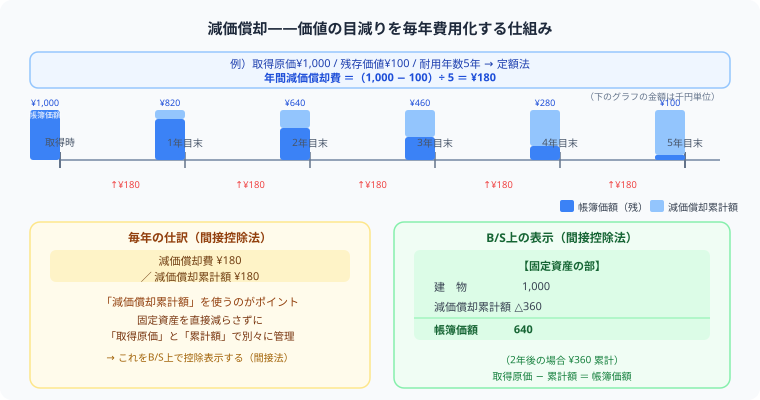

減価償却（定額法）の計算と仕訳
間接法・売却まで完全解説
「減価償却費？ 減価償却累計額？ なにが違うの……」と混乱していませんか？
この記事では計算式の意味から間接法の仕訳、さらに固定資産売却の処理まで順番に解説します。
定額法の計算パターンさえ身につければ、試験で確実に得点できる論点です。
2026年度の出題範囲は変更ありません。ただし2027年度から、この記事で扱う定額法に加えて「定率法」が新たに3級の試験範囲に追加されることが日本商工会議所から公式に発表されています（現在は2級の範囲）。2026年度内に受験予定の方は、この記事の定額法の内容のまま学習を進めて問題ありません。
減価償却とは？ まず言葉の意味から

たとえば100万円のトラックを買ったとします。このトラックは5年後にはボロボロになって10万円の価値しか残りません。
「じゃあ、価値が減った分（90万円）をどう記録するの？」という疑問に答えるのが減価償却です。毎年少しずつ費用として計上することで、固定資産の価値の目減りを帳簿に反映させます。
まず押さえる3つの用語
なぜ減価償却が必要なのか（費用配分の原則）
「1,000円のトラックを買った年に全額費用計上すれば簡単では？」と思うかもしれません。でも、それでは財務諸表が正確になりません。
購入年度に1,000円全額を費用計上
購入年：利益が激減
翌年以降：利益が不当に膨らむ
→ 毎期の業績比較ができない
使用期間（5年）にわたり毎年200円を費用計上
毎期の費用と収益が対応
正確な利益計算ができる
→ 費用配分の原則
固定資産の取得コストは、その資産を使用する期間（耐用年数）にわたって分割して費用化する。
定額法の計算式
毎年同じ金額を費用として計上するのが「定額法」。簿記3級はこれだけ覚えればOK。
問題文に「残存価額は取得原価の10%」と書いてあれば引き算してから割る。「残存価額ゼロ」なら取得原価そのままを耐用年数で割るだけ。問題文をよく読もう。
例題で確認しよう
パターン①：基本の減価償却（間接法）
¥1,000で購入した備品について定額法により減価償却を行う。残存価額は取得原価の10%、耐用年数は5年とする。間接法で記帳している。
直接「備品」の金額を減らすのではなく、減価償却累計額という別の勘定を使う方法。備品の帳簿価額は「備品 − 減価償却累計額」で計算できる。試験では間接法が圧倒的に多く出題される。
B/S上の表示と帳簿価額の変化
間接法では減価償却累計額を別勘定で管理するため、B/S（貸借対照表）では次のように表示されます。
| 期末 | 建物（取得原価） | 減価償却累計額 | 帳簿価額 |
|---|---|---|---|
| 1年目 | 3,000 | △1,000 | 2,000 |
| 2年目 | 3,000 | △2,000 | 1,000 |
| 3年目 | 3,000 | △3,000 | 0 |
帳簿価額 ＝ 取得原価 − 減価償却累計額。取得原価は変わらず、累計額が毎年増える。
直接法：建物の残高を直接減らす → 取得原価がB/Sから見えなくなる
間接法★：「建物3,000 △累計額2,000」のように対照表示 → 取得原価と累計額の両方がわかる
試験では間接法が標準。B/Sを見た人が「いくらで買って今いくら価値が残っているか」を把握できる。
決算整理後残高試算表から逆算する
ここまでは「取得原価→年間の減価償却費→減価償却累計額」という順算でした。しかし精算表・決算整理の問題では、決算整理後残高試算表に記載された減価償却累計額から、逆に取得原価や経過年数を求めるタイプの出題があり、多くの受験生がここで手が止まります。考え方の向きを逆にするだけなので、矢印を逆にたどるイメージで整理しましょう。
順算：取得原価 → 年間の減価償却費 → 減価償却累計額
逆算：減価償却累計額 ÷ 経過年数 → 年間の減価償却費 → 取得原価
決算整理後残高試算表に「減価償却累計額 ¥2,700」と記載されている。この備品は定額法（残存価額は取得原価の10%、耐用年数5年）で減価償却しており、取得から当期末まで3年が経過している。この備品の取得原価はいくらか。
累計額は「毎年の償却費 × 経過年数」の合計。定額法なら毎年同じ金額なので、経過年数で割れば1年分が出てくる。
年間の減価償却費の公式：（取得原価 − 残存価額）÷ 耐用年数 ＝ 年間の減価償却費
残存価額は「取得原価の10%」なので、（取得原価 × 0.9）÷ 5年 ＝ 900 という式が成り立つ。
固定資産を売却したときの仕訳
売却の仕訳は一度に書こうとすると混乱します。4ステップで順番に書くのがコツです。
5年前に取得した車両（取得原価¥900、減価償却累計額¥600、当期減価償却費¥100）を¥300で売却した。売却代金は翌月末受け取る。
期首から売却日までの分を先に費用計上。
翌月末受け取り → 現金ではなく「未収入金」。即日受け取りなら「現金」。
売却したので「車両」を貸方へ、「減価償却累計額」を借方へ。
左右のバランスを見て、借方が足りなければ「固定資産売却損（借方）」、貸方が足りなければ「固定資産売却益（貸方）」。
帳簿価額（取得原価 − 累計額 − 当期償却費）= 900 − 600 − 100 = 200
売却額300 ＞ 帳簿価額200 → 差額100は固定資産売却益（貸方）
売却額が帳簿価額より低ければ固定資産売却損（借方）になる。
売掛金は商品を売ったときに使う。固定資産の売却代金は営業外取引なので「未収入金」を使う。同じ「後で受け取るお金」でも勘定科目が違う。
簿記の実力は、問題を1つ解くたびに確実に積み上がっていきます。
この記事が少しでも参考になったら、この下にある【いいねボタン】をポチッと押してもらえると、めちゃくちゃ嬉しいです！ そして、Study Questで今日の学習時間を記録して、合格までの成長を「見える化」していきましょう。